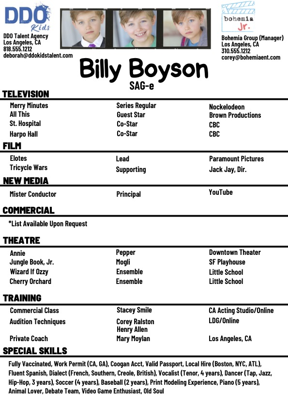
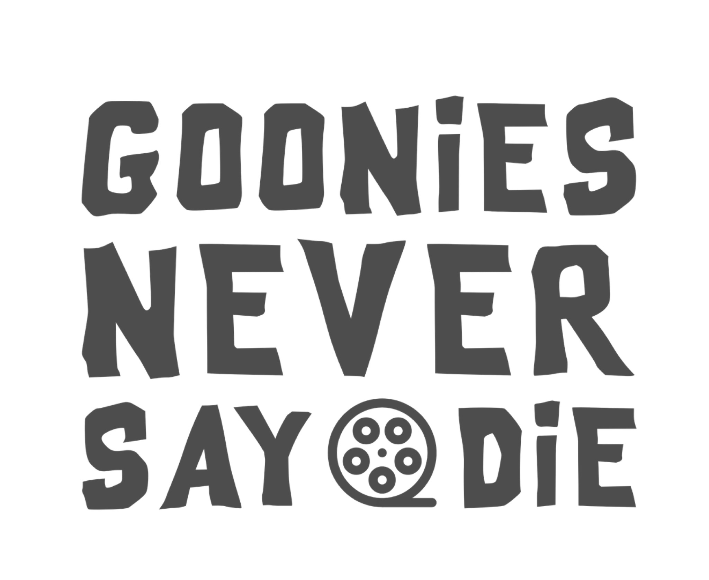

Start Here
Meet Corey
Corey Ralston · Youth Talent Manager · Bohemia Group
Hi, I'm Corey. I'll be your manager, advocate, occasional reality check, and one of the people most invested in helping you build a lasting career in this business.
I've spent most of my life around young performers. I began as a child actor myself and today work as a youth talent manager, acting coach and founder of Child Actor 101, a resource and training community created to help young actors and their families navigate this industry with a little more knowledge and considerably less guesswork.
My approach to management is very hands-on. I care about much more than submitting you for roles. We'll work together on your materials, training, audition technique, career strategy, representation, relationships with casting, and the gradual process of figuring out exactly where you fit in the industry.
I also believe strongly in developing actors, not simply chasing bookings. A booking is wonderful. Building the skill, confidence, professionalism and individuality that can sustain a career is the bigger goal.
You'll discover pretty quickly that I communicate a lot, have opinions about almost everything, and would much rather you ask me a question than quietly wonder whether you're doing something wrong.
As a Bohemia Jr. client, you'll also have access to my Child Actor 101 training resources, audition preparation tools, self-tape feedback and, when space and scheduling allow, classes and coaching at no additional charge.
That's what this guide is for, too. Think of it as the owner's manual for working with me and Bohemia Jr. You don't need to memorize it. Come back whenever you need it.
Welcome to the Goonies.
Start here. You do not need to tackle this entire guide today or memorize everything in it. Begin with the New Client Checklist below and work through the "Start Here" sections. After that, think of this as your owner's manual for working with me and Bohemia Jr. Come back whenever you need it.
New Client Checklist
Tick these off as you go — your progress is saved on this device.
Start Here
How Your Team Works
A lot of people can touch a young actor's career. Here's who does what, so you always know where to turn.
The Actor
Train, prepare, audition, communicate, be professional, keep your skills sharp and do the work.
The Parent
Manage scheduling, transportation, paperwork, permits, finances and communication while supporting and protecting the young actor.
Corey / Management
Career strategy, submissions, development, materials, audition support, pitching, industry relationships and coordinating the overall representation team.
Your Agent
Agents work alongside management on submissions, auditions, contracts, negotiations and production communication. Depending on the market and agency, their role may vary.
Casting
Casting is not part of your representation team. They are evaluating actors for the production. Our job is to make their job easy by being prepared, professional and competitive.
When you're unsure who should handle something, start with me.
Please talk to me before making a significant investment in headshots, reels, demo scenes, websites, classes, workshops or other career materials. I can usually tell you whether you actually need it, what you should be looking for, and whether the vendor or service is a good fit.
Start Here
Google Drive
Every client should receive an invitation by email to their individual Google Drive folder. This will be our primary home for storing and reviewing your career materials.
- Current approved headshots
- Current resume
- At least one strong performance clip
- About Me video
- Slate Shot(s), when applicable
- Required paperwork/documents
- Demo scenes
- Character type clips
- Singing/vocal clips
- Dance clips
- Special skill clips
- VO reel/material
- Genre-specific clips
- Full reel / updated reels
- Booked-work footage as it becomes available
Not every actor needs every material type in the "build over time" list. We'll figure out together what actually makes sense for you.
Headshots
Store every headshot session — full proofs. I will make sub folders to organize each shoot into types, selects, and "to upload."
Important Docs
Upload work permits, Coogan paperwork, passports, vaccine records, union memberships, contracts, etc.
Reels / Clips
- Booked Work Footage — airchecks from aired, streaming or televised programming, edited clips for reel, digital prints of films/appearances.
- Demo Scenes — client-created custom scenes for reel, shot/edited like booked work.
- Self Tapes for Profiles — custom scenes, project-released/non-NDA auditions that are coached and great examples of skill, genre, character.
- VO Reel — voice over mp3 audio files of edited reel, clips, demo examples, booked work, character, commercial, narration, video game, animation, etc.
- About Me — a 60-second charismatic getting-to-know-you video.
- Slate Shots — seven-second video for Actors Access to catch attention. See Slate Shot Ideas.
- Vocal / Singing Clips — 16/32 bars of accompanied or backing-track vocals of musical theater/pop songs that showcase range and style, filmed like a self tape.
- Dance Clips — 30–60 seconds of dance style or modern pop dance skill to music.
- Special Skill Clips — (for Casting Networks) 30-second clips of athletic or trained disciplines.
- Character Type Clips — 30-second demo or self tape clips of types (underdog, bully, airhead, etc).
- Reels — edited compilations of booked work or a combo of clips, self tapes, demo scenes, booked work, etc. No longer than 2.5 minutes, or genre-based 60-second reels.
Self Tapes
Self tapes for review, if not using WeTransfer, or self tapes you want to save.
Resumes
PDFs or docs of your current resume. Use resumes.childactor101.com for the industry standard template.
Audition Tracker (optional)
Submission sheets from talent reps, spreadsheets of auditions and outcomes. Use pages.childactor101.com.
Please keep this folder organized with appropriately labeled sub folders that explain the contents. For example, a sub folder may be labeled HEADSHOTS and may include another sub folder labeled "June 2027."
Start Here
Work Permits / Coogan Accounts
- Obtain or supply us with Coogan Account information ASAP.
- Keep all entertainment work permits required for the actor's work current. California clients and actors seeking California work should maintain a current California Entertainment Work Permit. Out-of-state clients should also maintain any permit required by their home state or the jurisdiction where they will work.
Set a calendar reminder one month before expiration of the permit!!!
Start Here
Casting Profiles
Every client must have an active profile on Actors Access and Casting Networks. If you have not done so, please add us as representatives on those profiles.
- LA Casting — Management
- Bohemia Group
- LA Casting — Agency Code
- 78a37a4
- Actors Access — Management
- Bohemia Group — Susan Ferris, Los Angeles, CA
Actors Access is connected to Breakdown Services and that is our primary source of casting notices for FILM, TV, STAGE and some COMMERCIAL casting notices. You have two free headshots that you may upload. It is vital that you upload an approved THEATRICAL and COMMERCIAL headshot there. We will want you to add additional headshots after you have taken them or we have discussed options. It is likely that you will be asked to upload a minimum of 3 and up to 5 additional photos to help us submit the best looks to casting for specific roles.
- Fill out required info on your casting profile.
- Make sure to always update your skills, sizes and resume.
- Check in at least four times a year to see if info is accurate.
- You may update your resume as soon as you shoot a project, but not before.
- Please feel free to submit yourself, or ask me to submit you, for any commercial, non-union, print or student film projects. There will come a time when I may decide that we are not needing these types of jobs anymore, or I may ask you to pause or stop self submissions for various reasons.
If someone claiming to be casting, production, an agent, manager, photographer or other industry professional contacts you directly and something feels unusual, send it to me before responding, paying anything, sharing personal information or agreeing to meet. There is almost never a reason you need to make an immediate decision without checking with your representation first.
Your Materials
Headshots
Headshots are the most important marketing tool you have and should be given a lot of care and attention. Kids under 15 should get updated photos twice a year at least. Every actor should update looks once a year, or when you significantly change your appearance, or when you need to reevaluate your tools if facing a slump in activity.
I am extremely opinionated about headshots. I am a former photographer with years of experience in this field and I know what photos work. I am an advocate of spending as much as you can afford on this essential tool. Headshots are the key to getting you opportunities. Be competitive and have amazing photos.
Here is a recommendation list of photographers at various price points that will deliver the type of photo that fits your needs and style.
Your Materials
Resumes
- Print at least 10 copies of your resume in case casting requests a hard copy.
- Have a PDF resume on file.
See the resume template for the industry standard format. Do not creatively stray too far from this resume style.

Your Materials
Slate Shots
You must attach a slate shot to a few photos. Slate shots are 7-second video clips that match your headshot. It is optional to match wardrobe. It is a casual introduction by the talent and it is NOT the typical slate given before an audition. It should be genuine and show personality that reflects the tone of the individual photo.
Example: "Hi there! I'm Corey Ralston and I look forward to meeting you soon."
You are given one free slate shot and additional slate shots are $5 a piece. Once you record these please upload to Google Drive for approval before posting them.
Your Materials
Video Clips
It is essential to upload performance clips on Actors Access. Casting offices most likely do not know who you are yet and need to see an example of what you can do. Having performance clips we can submit with your photo will increase your odds of getting an audition in a huge way. Please upload at least one clip ASAP.
Clip Examples
- Reel of previous work
- Self taped scene or monologue
- Singing clip
- Specialty skill (athletic, hobby)
- About me video
- Demo clips
Your Materials
Demo Clips
Self created content is king right now. It is very simple to film a demo scene to use as a clip. This should look as professional as you are capable of. It should be filmed with a scene partner and should be shot at a location that makes sense with good lighting and sound. It should be edited when appropriate with multiple camera angles. A good place to start is having a wide master shot of the entire clip and one angle on or over the shoulder of the scene partner showing a closeup of the speaking performer. These shots can be edited using simple software or apps on your smartphone.
- Clips should be no longer than 60 seconds in length.
- They should be original or un-produced material.
Do not use scripts from TV or film, especially if it's well known or iconic. You want the clip to be focused on you. Do not give an opportunity for a viewer to elicit a comparison of a previous actor's performance.
Take this course for free to get two scenes ready for your profiles. Email me if interested.
Ultimately we would love to have at least one performance clip that matches every headshot uploaded of types you can play. This is a proven valuable tool to assist casting and get far more auditions!
For LA Casting you will want to upload a reel or performance clips as well. Please include an upbeat or commercial example. You may film a mock or spec commercial on a product — have fun with it and make sure it showcases your talent in the best light.
Connect with me to brainstorm ideas and receive guidance on what works. It is fun and challenging and keeps your skills sharp. Once you have footage from projects you were hired to act in, we can discuss creating a reel and posting those clips as well.
Auditions & Work
Auditions
Most auditions will be sent to you by email — via the agency (with mgr/Bohemia cc'd), or from Bohemia with the agency cc'd. 99% of them will be self taped auditions.
Please adhere to the deadline. It's better to get it in early, with enough time for me to review it and offer corrections if needed.
Do not hesitate to ask for more time if you truly need it to give your best work. A lot of times we can request that from casting, and more often than not they oblige. It should go without saying to not make a habit out of extension requests — learn to manage your time.
For most TV and film auditions, I will automatically send you a customized Prep101 guide. You do not need to request one. These guides can include project, role, tone, character, story, relationship and performance information designed to help you make informed choices before you tape. It's a preparation tool, not necessarily a substitute for coaching. (A very short turnaround or certain commercial auditions may not include one.)
Guide Examples
Prep101
Reader101
Reader101 helps your reader understand how to support the scene without accidentally hurting your audition. It analyzes the sides from the reader's perspective and gives them guidance on pace, tone, relationships, cues and how much performance to give you. Free to use. Email me for a free use code.
Auditions & Work
Self Tape Auditions
An important part of my duties as your manager is to review your self tape auditions before they are sent to the agency or uploaded to Actors Access. If possible, I try to watch them before the deadline to give notes or changes if necessary.
You can share your self tape auditions with me by sending the files via WeTransfer, or by creating a Google Drive sub folder.
I do not get access to view self tapes that are uploaded by the client to Actors Access. The agent can watch, approve, and submit — but I would have no access to that. Please make it a priority to send self tapes to me for review before the deadline. I know that's not always going to be reality, but we can make an effort.
Send your tape as early as possible. I will always make an effort to review it before the deadline, but a tape sent shortly before it's due may not leave enough time for notes, another take or coaching. Feedback is always available, for every audition, big or small. Time for that feedback is not unlimited.
Auditions & Work
Callbacks, Avails & Bookings
Callback
Casting wants to see you again. Notify me immediately if the communication didn't already include me or the representation team.
Producer Session / Chemistry Read / Test / Additional Round
Treat these as significant developments and make sure I know immediately.
Avail / Check Avail
An avail or check-avail means production is checking whether the actor would be available if selected. It is not a booking.
Do not announce it publicly, post about it, assume you have the job or make major plans around it unless instructed otherwise.
Booking
- Make sure I and the representation team know immediately.
- Do not independently negotiate or agree to changes involving rate, dates, travel, lodging or other material terms.
- Forward contracts, deal memos, production paperwork and important production communication as needed.
- Keep call sheets and relevant paperwork.
- Ask when uncertain.
Do not announce a booking, post scripts/sides, share call sheets, reveal locations, post wardrobe/set photos or discuss unreleased production information until you know it has been publicly cleared.
Auditions & Work
Bookouts & Availability
A bookout is a date or period when the actor cannot audition, travel or work. Examples include vacations, school trips, performances, competitions, family commitments or other significant conflicts.
- Tell me as soon as you know about a bookout.
- Include exact dates.
- Tell me whether the actor is completely unavailable or only unavailable during certain hours.
- Mention travel if relevant.
- Update me if plans change.
- Do not wait until an audition arrives to tell me about a long-planned conflict.
A short appointment or a few unavailable hours does not necessarily mean you need to book out an entire day. When in doubt, tell me what's going on and I'll help determine what needs to be communicated.
Auditions & Work
Out of State Clients
- Every effort will be made to get you self tape auditions instead of in the room, if they offer an option.
- You will only be submitted for guest star and larger roles on episodic TV productions.
- All significant SAG film roles.
- I will not submit you on commercials, co-star or non-union projects unless you are in the area.
Growing Your Career
Training
- Every actor should be in constant pursuit to improve their skills.
- Do not get complacent, ever.
- You should be training always, and with reputable instructors.
- Casting will look at current training the same as credits when you are developmental.
- With the exception of actors under 8 (determined case by case), every client should be in at least one weekly class — preferably an audition technique class with on-camera scene study.
- Additionally I would encourage commercial workshops and casting workshops.
- I also highly recommend improv classes.
Growing Your Career
Coaching
You should be in continuous coaching as well. It is my passion and pleasure. Bohemia Jr. management clients are never charged for coaching or Child Actor 101 classes with me, subject to available class space and my coaching schedule (see Additional Services & Client Resources below for how that works). But my goal is for everyone to also find a trusted outside coach that you can work with consistently or when needed. I can recommend names.
I require all TV and film roles larger than a co-star to be coached prior to the audition. You must prepare and be competitive.
Discuss any classes or coaches with me prior to signing up. I have a wealth of knowledge and recommendations to offer and can determine what the best fit for your individual needs are. I can also recommend classes and coaches that fit your budget.
Classes & Coaches I Recommend

Growing Your Career
Agents
If you already have agency representation, all communication with them will be handled via email. As your manager, I am the central hub of your team — everything goes through me first, including auditions, self-tapes, schedules, and material approvals. Agents expect and prefer this, especially when working with child actors and their parents. If you receive direct communication that leaves me out, make sure to loop me in via email. This applies to regional agencies as well.
Managers are deeply invested in every aspect of your entertainment career. If you don't yet have an agent, our first priority — if desired — will be securing a commercial agent. Once you're ready for representation at established agencies, I will pitch you at the right time to set up meetings. There is no need to stress about agents — you will get one when the time is right.
On the theatrical side, you are fully covered by Bohemia. Theatrical agents — especially those in adult departments — are looking for credited, specialized actors. My focus is on developing you to a point where you are a strong candidate for agency representation. Trust the process and be patient.
Growing Your Career
Networking
One vital and often overlooked job of actors is networking. It is so important! Please take time at least once a quarter to send an email, postcard, direct message, etc. to your database of industry contacts. This includes casting directors you have met or want to meet, agents, producers, etc. I can give plenty of advice and ideas.
A purpose, plus a photo, casting profile link, video link, and my email address.
Run new outreach ideas by me first, particularly if you are contacting someone you do not already know. There is a difference between professionally maintaining an existing industry relationship and cold-contacting someone in a way that could work against you.
Growing Your Career
CPP (formerly CHSPE)
If and when you are 16 and a sophomore in high school, it is very important to take the California High School Proficiency Exam in order to become legal 18 and stay competitive in this market.
It is a huge advantage to your career. It does not mean emancipation, nor does it end your high school education. Register and study early — the exam is offered 3x a year only.
Growing Your Career
IMDb
IMDbPro is a great subscription-based resource that is an industry standard. I encourage all clients to sign up for an account to have control over your images, videos, bio and more. You can also have access to a much wider and more detailed search on everyone in the industry, including contact information.
If you are on IMDb with a credit, I will add you to my roster on the platform. I will also request profile editing access.
If you have a credit and are not listed, I have the ability to add that as a contributor. Reach out to me if you need help with that or have questions.
The STARmeter feature is not a qualified or important tool in the industry. It is novelty at best. Do not put much weight on your rating or trying to obtain a better rating. It is a fun feature that can give you ideas on what is trending, that is all.
Working With Corey
Communication
Communication is key to a successful relationship. This is a fast paced business and often times I am under the gun to get a response to casting or production. Please try your best to return messages promptly. Neither of us want to miss out on an opportunity. I am reachable by phone, text and email. My "business hours" are 10am to 8pm. I will do my best to reach you after those hours and on weekends, but understand I am a family man as well.
Best Ways to Reach Corey
Never feel like you are bugging me!
- Call me if facing an urgent matter: 559-572-3897 or 323-593-6442.
- Leave a VM, followed by a text (559#) if I do not answer.
- FB Messenger works as an additional backup.
- Try a Bohemia assistant as well.
Please send any pertinent information via email and keep text to chat and simple requests or updates. Email is essential to me when needing to look up info — I use my Gmail as a search box for my life.
I am the first to admit that I am not very speedy and can be forgetful in returning communication. It's a constant goal to become more efficient at this. Please keep nudging me if you haven't heard back. We will get a rhythm!
Working With Corey
Keep Me Updated
Youth actors change quickly, and representation only works when I have current information. Please let me know about meaningful changes, including:
- School schedule or schooling status
- Major recurring extracurricular or sports commitments
- Extended travel
- Vacations and unavailable dates
- Relocation or address/market changes
- Significant height or clothing-size changes
- Major hairstyle/color changes
- Braces or other noticeable appearance changes
- New skills or substantial improvement in an existing skill
- Passport status
- Union status
- New or changed agency representation
- Anything else that materially affects availability, casting or how the actor should be submitted
Before making a significant change to the actor's appearance, please give me a heads-up when possible. You don't need my permission to get a haircut, but our headshots and casting profiles need to accurately represent the actor casting expects to see.
Working With Corey
Getting Paid & Commissions
We all love getting paid. And even if it's $10 it still feels nice. Sometimes managers can work for a client for one to two years without receiving a dime.
Remit 10% of the total gross to Bohemia as soon as you get paid.
Please reach out to Corey or the assistant directly for current payment details (Zelle, Venmo, PayPal, ACH or check) — see Contact below.
Keep Track Of
- Copies of contracts and deal memos.
- Pay stubs and payment records.
- Let me know when payment is received.
- Records of residuals and subsequent payments.
- Forward relevant payment or contract information when requested.
- Contact me or the assistant when unsure about commissions or payment handling.
Working With Corey
Meet With Corey
I like to have official in-person or video chat meetings at least once a year to set goals and discuss any and all issues we are facing. It's very important to have these to keep our team aligned.
November or May are ideal meeting times.
Working With Corey
What Makes Our Relationship Work
Please Don't Make Me Chase You For…
- Auditions, callbacks or bookings (whether paid or not).
- Showing up on time. Late or no-shows to castings make me look bad!
- Updated materials. Having to ask more than twice slows both of us down.
- Bookout dates.
- Important career updates (see Keep Me Updated above).
- Repeatedly disregarding professional guidance we've already discussed without communicating with me first.
Questions, discussion and parent advocacy are always welcome. That's a different thing entirely, and I want it.
Things I Absolutely Love
- Video/voice updates after auditions and jobs.
- Getting to know everyone better in any way possible — it helps a lot in representing my clients.
- Tags on social media.
- Photos, photos, photos, always!
- Invites to plays, showcases and screenings.
- Actor referrals to talent you meet and trust.
- Calls & visits that are not about Hollywood!
Working With Corey
Additional Services & Client Resources
One of the benefits of working with me is that management is only one part of what I do. Through Child Actor 101, I also teach acting classes, coach actors, create audition preparation tools, and maintain a growing collection of training and career resources.
My clients are always welcome to take advantage of these resources whenever space and scheduling allow.
Coaching & Classes
Bohemia Jr. management clients are never charged for coaching or Child Actor 101 classes with me. Participation is subject to available class space and my coaching schedule.
Classes. I regularly teach classes and workshops through Child Actor 101 covering audition technique, scene study, character work, comedy, self tapes and other areas of the craft. You're welcome to participate at no charge whenever there's space in a class that's appropriate for you.
Private coaching. Private coaching with me is also free for management clients when scheduling allows. Priority naturally goes to significant auditions, callbacks and larger roles, so reach out as early as possible.
Every Audition Gets Support
You should never feel like you are completely on your own with an audition. See Auditions above for how Prep101 guides work, and Self Tape Auditions for how self-tape feedback and timing work. Feedback is always available, for every audition, not just the "important" ones.
Other Creative Help
I also have professional experience in writing, photography, retouching, graphic design, video editing, websites and creating actor materials. From time to time I may help clients with these things as well.
Those additional creative services aren't guaranteed as part of management and depend entirely on my availability. When I can't personally help, I can usually recommend a vendor, resource or better way to get it done.
When in doubt, ask. If I can help, I will. If I can't, I'll try to point you toward someone who can.
Resources
Vendor Directory
Utilize the resource directory to find vendors, coaches, classes, services and more.
Resources
Facebook Groups
I founded and moderate a resource group called Child Actor 101. Please join and take advantage of the community and wealth of information.

I created a group for my roster as well. It is called The Goonies. I urge you to join — it is the easiest way to communicate with my roster all at once.
Resources
Child Actor 101 Training & Coaching
I offer ongoing classes, workshops, private coaching and educational resources through Child Actor 101. Bohemia Jr. clients are welcome to participate at no charge whenever class space and my schedule allow.
For the complete policy on client coaching, classes and audition support, see Additional Services & Client Resources above.
Resources
The Blog
There is a wealth of articles that I post on the Child Actor 101 website — a good resource on a great many pertinent topics for navigating the industry.
Corey Ralston
Bohemia Jr.
Growing Your Career
Social Media
See IMDb above for details on IMDbPro, adding credits, and why the STARmeter ranking doesn't matter.
I highly recommend securing a website with your name as the domain, if possible. At the very least, purchase the domain name immediately. Once you gain any level of success, others may buy it first and demand a hefty price to sell it back to you. Owning your domain gives you control over your online presence and how you appear in Google searches. If you're unsure what your website should include, let's discuss the best approach for you.
I can create your website for you. I use Namecheap domains and Carrd.co to host and build the site. It will cost you about $25 to maintain each year.
Whether or not to create or maintain social media profiles on Instagram, TikTok, Facebook, or X is entirely a personal choice for parents. In my opinion, having a massive following is not necessary. Despite what some may claim, I have never seen an actor lose out on a role because of their social media presence — or lack thereof. While influencer-driven jobs exist, major TV and film roles that truly matter for an actor's career are not awarded based on follower counts.
A child's social media accounts should be managed and monitored by parents or a trusted public relations firm. Keep personal and professional accounts separate — your acting profile should focus solely on your career. Social media can be a powerful networking tool, offering opportunities to connect with fans, fellow actors, and industry professionals. Use it strategically and professionally!
Never post or publicly share:
When in doubt, ask me before posting.
Please don't get caught up in the social media frenzy surrounding young actors. I couldn't care less how many followers you have — it has nothing to do with your talent or credibility. It's easy to fall into the trap of prioritizing Instagram clout, but be mindful and stay humble. Hype is just that — hype. "Instafame" is not the goal, nor should it be your focus.
I represent actors who are in this for the craft — performers who dream of winning Oscars and building lasting careers, not chasing fleeting internet validation. I want a roster of professionals who are dedicated to the work, not the illusion of success.
Be strategic, be genuine, and always present yourself with humility. Desperation is a career killer — trust me on that. Yes, red carpet events can be exciting and offer networking opportunities, but they are not your priority. Your job is to audition, improve, and grow as an actor. If that ever becomes secondary to social media status, it's time for a serious reality check.